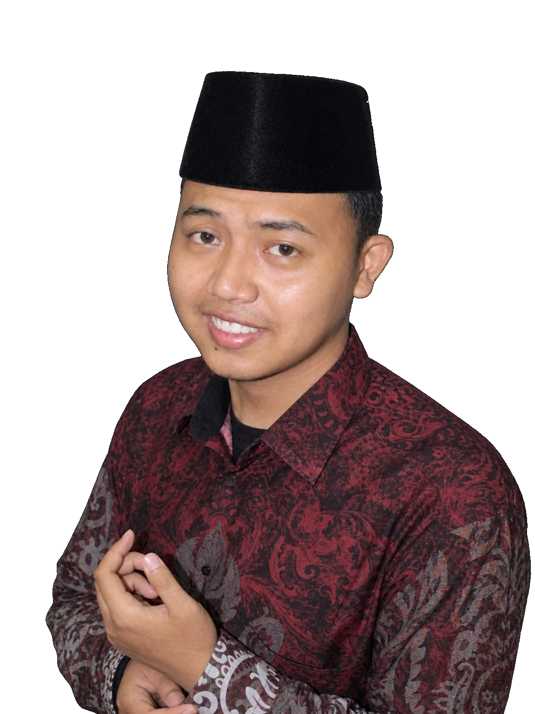

01 / ISI E-BOOK
Bingung mulai dari mana? Kenalan dulu.
Produk digital bukan jalan instan. Tetap perlu produk yang bermanfaat, belajar, konten, dan praktik. E-book singkat ini membantu kamu memahami langkah pertamanya.
01Apa itu produk digital?Pengertian dan contohnya, dari e-book sampai template Canva.
02Di mana mulainya?Tempat membuat, menampilkan, dan mengenalkan produk.
03Bagaimana alurnya?7 langkah dari memilih produk sampai evaluasi.
04Contoh nyataGambaran alur lewat template CV.
05Bonus 50 ide nicheUntuk ibu rumah tangga, mahasiswa, santri, dan karyawan.
02 / CERITA

Jeki
KENAPA E-BOOK INI ADA
Aku juga pernah
bingung mulai dari mana.
Halo, aku Jeki.
Sebagai santri dengan waktu terbatas, aku sempat mencoba affiliate dan reseller, tapi sulit mempelajari semuanya sekaligus.
Sampai akhirnya aku mengenal produk digital dan memahami alurnya sedikit demi sedikit.
Rebahan Starter aku tulis untuk kamu yang ada di posisi yang sama.
RTC
03 / MULAI
Mulai dari langkah kecil.
Ambil e-book gratisnya, baca saat ada waktu, lanjut sedikit demi sedikit.
Ambil E-book Gratis ↗ Lihat paket lengkap